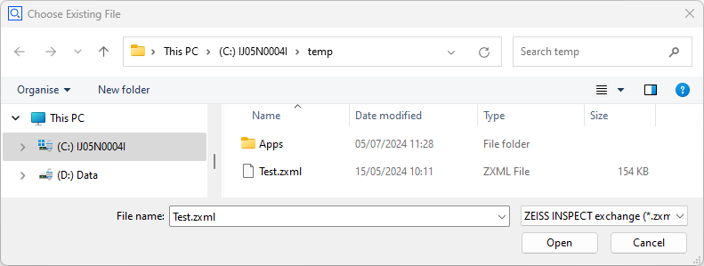

Selecting a file or folder
Python scripts for ZEISS INSPECT often require reading or writing files. The command
choose_file()provides a simple solution for selecting a file path interactively.

Interactive configuration of choose_file()
You insert the command choose_file() into your script by using RMB ► Insert ► File… in the script editor. A configuration dialog is shown:

- Type
Allows to customize the selection. The following options are available:
Any file
New file
Existing file
Multiple existing files
Existing folder
- Default folder (optional)
The folder shown when the file selection is opened
- Default file (optional)
The default file proposed by the dialog
- File types
Allows to filter files by file extension pattern
After completing the configuration dialog, choose_file() is inserted into the source code. You change its configuration by clicking on the command choose_file() again.
Scripting choose_file()
Setting the parameters directly in the source code is possible, too:
Parameters:
Name |
Description |
Type |
|---|---|---|
file_types |
file types |
QVariantList |
file_types_default |
default file type |
QString |
folder |
base folder |
QString |
file |
default selected file |
QString |
selection_type |
selection type |
QString |
Return value
Depending on the selection type, the command choose_file() returns
A single file path,
A list of file paths,
Or a folder path.
If the dialog is cancelled, a RequestError exception is thrown.
Example
file=gom.script.sys.choose_file_draft (
file_types=[['*.zxml', 'ZEISS INSPECT exchange'], ['*.gxml', 'ZEISS INSPECT exchange']],
file_types_default='*.zxml',
file='C:/temp/Test.zxml',
folder='C:/temp/',
selection_type='load file')
print(f'{file=}')
# Output: file=C:/temp/Test.gxml
See also
A user-defined dialog is used if the file selection must be combined with other widgets or if additional functionality is needed: